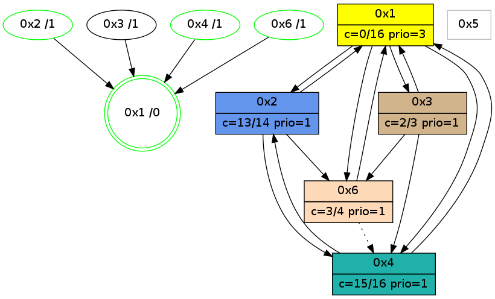

>> << IDX [start] -100 -25 -5 +0 +5 +25 +100 [1140.00390697]
 Previous packets
1135.001384 beacon03(adaf) #0 coord=01,02,05,03,04,06 cycle=944.0ms assoc 64 49 ba
1135.011384 beacon04(adaf) #0 coord=01,02,05,03,04,06 cycle=944.0ms assoc 64 ef 90
1135.021385 beacon06(adaf) #0 coord=01,02,05,03,04,06 cycle=944.0ms assoc 64 9b 8c
----------------------------------------------------------------------
1135.975927 beacon01(adaf) #0 coord=01,02,05,03,04,06 cycle=944.0ms assoc
-- color-indic=0 64 6e fb
1135.985888 beacon02(adaf) #0 coord=01,02,05,03,04,06 cycle=944.0ms assoc 64 3f 04
1135.995888 beacon05(adaf) #0 coord=01,02,05,03,04,06 cycle=944.0ms assoc 64 99 2e
1136.005888 beacon03(adaf) #0 coord=01,02,05,03,04,06 cycle=944.0ms assoc 64 05 0a
1136.015887 beacon04(adaf) #0 coord=01,02,05,03,04,06 cycle=944.0ms assoc 64 a3 20
1136.037033 [Hello(1): seq=843 sym=2,4,6,3 color=0 sysInfo=hasWarning,MaxColorIndicationCalled,MaxColorResponseCalled,MaxColorRequestCalled,ColoringModeRequestCalled stat=2:6,3,14,0/4:14,0,15,4/6:5,2,4,0/3:2,0,3,0]
----------------------------------------------------------------------
1136.980432 beacon01(adaf) #0 coord=01,02,05,03,04,06 cycle=944.0ms assoc
-- color-indic=0 64 aa 94
1136.990392 beacon02(adaf) #0 coord=01,02,05,03,04,06 cycle=944.0ms assoc 64 fb 6b
1137.000393 beacon05(adaf) #0 coord=01,02,05,03,04,06 cycle=944.0ms assoc 64 5d 41
1137.010393 beacon03(adaf) #0 coord=01,02,05,03,04,06 cycle=944.0ms assoc 64 c1 65
1137.020393 beacon04(adaf) #0 coord=01,02,05,03,04,06 cycle=944.0ms assoc 64 67 4f
1137.030395 beacon06(adaf) #0 coord=01,02,05,03,04,06 cycle=944.0ms assoc 64 13 53
----------------------------------------------------------------------
1137.984937 beacon01(adaf) #0 coord=01,02,05,03,04,06 cycle=944.0ms assoc
-- color-indic=0 64 8f a9
1137.994898 beacon02(adaf) #0 coord=01,02,05,03,04,06 cycle=944.0ms assoc 64 de 56
1138.004897 beacon05(adaf) #0 coord=01,02,05,03,04,06 cycle=944.0ms assoc 64 78 7c
1138.014898 beacon03(adaf) #0 coord=01,02,05,03,04,06 cycle=944.0ms assoc 64 e4 58
1138.024898 beacon04(adaf) #0 coord=01,02,05,03,04,06 cycle=944.0ms assoc 64 42 72
1138.046307 [Hello(1): seq=844 sym=2,4,6,3 color=0 sysInfo=hasWarning,MaxColorIndicationCalled,MaxColorResponseCalled,MaxColorRequestCalled,ColoringModeRequestCalled stat=2:6,3,14,0/4:14,0,15,4/6:5,2,4,0/3:2,0,3,0]
1138.049762 [STC(1) #0.202 new-neigh,tree-change,inconsistent-stability,stable,to-color d=0]
----------------------------------------------------------------------
1138.989441 beacon01(adaf) #0 coord=01,02,05,03,04,06 cycle=944.0ms assoc
-- color-indic=0 64 4b c6
1138.999402 beacon02(adaf) #0 coord=01,02,05,03,04,06 cycle=944.0ms assoc 64 1a 39
1139.009403 beacon05(adaf) #0 coord=01,02,05,03,04,06 cycle=944.0ms assoc 64 bc 13
1139.019403 beacon03(adaf) #0 coord=01,02,05,03,04,06 cycle=944.0ms assoc 64 20 37
1139.029403 beacon04(adaf) #0 coord=01,02,05,03,04,06 cycle=944.0ms assoc 64 86 1d
1139.051070 [Hello(6): seq=857 sym=1 asym=4 color=3 sysInfo=hasWarning,MaxColorIndicationCalled,ColoringModeIndicationCalled,MaxColorResponseCalled stat=1:3,13,15,0/4:15,5,3,1]
1139.054022 [STC(6)->1 #0.202 new-neigh,tree-change,inconsistent-stability,stable,to-color d=1]
1139.056712 [Hello(4): seq=944 sym=2,1 sym= sysInfo=hasWarning,MaxColorIndicationCalled,ColoringModeIndicationCalled,MaxColorResponseCalled stat=]
1139.059611 [STC(4)->1 #0.202 new-neigh,tree-change,inconsistent-stability,stable,to-color d=1]
1139.068981 [STC(2)->1 #0.202 new-neigh,tree-change,inconsistent-stability,stable,to-color d=1]
----------------------------------------------------------------------
1139.993946 beacon01(adaf) #0 coord=01,02,05,03,04,06 cycle=944.0ms assoc
-- color-indic=0 64 07 76